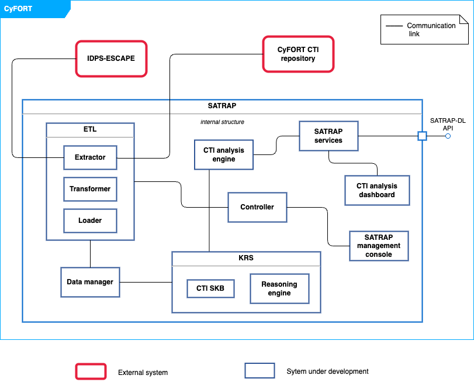
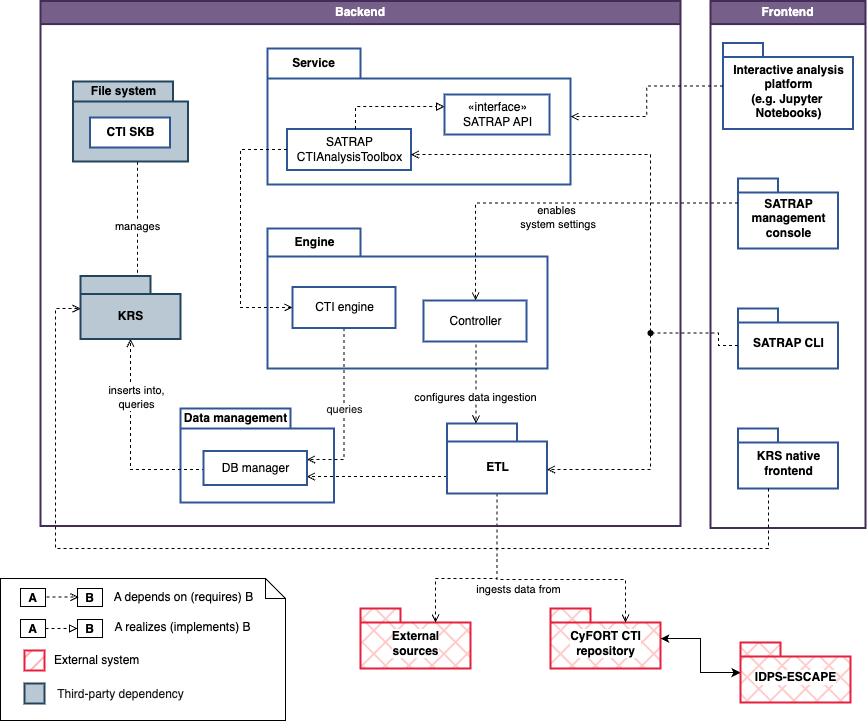
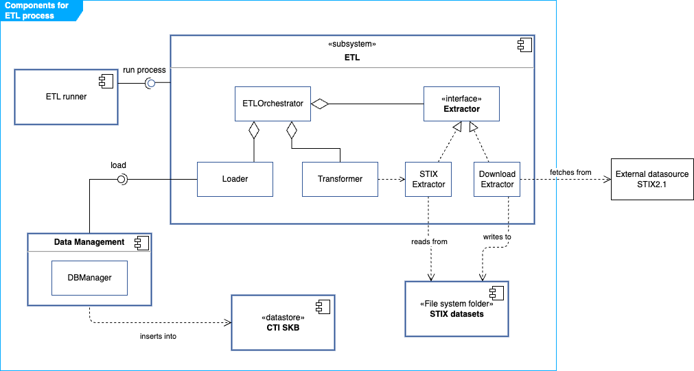
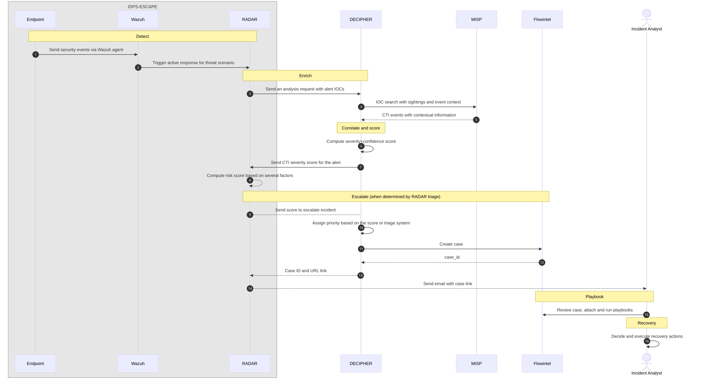

1 SATRAP ARC-SATRAP
Architecture design artifacts for the SATRAP CTI analysis platform.
1.1 SATRAP: System structure overview ARC-001
This UML composite structure diagram shows the overview of SATRAP along with the systems on which it has some dependency.

Roughly, the components are described as follows:
| Component name | Component description |
|---|---|
| CTI Knowledge representation system | Semantic Knowledge Base of CTI (CTI SKB) defined on a strongly-typed data model, plus an automated logic-based reasoning engine. |
| Data manager | Manages the interactions and connection to the knowledge base |
| ETL module | Enables ingesting data from diverse categories into the CTI SKB, for instance, cybersecurity knowledge (e.g., datasets from MITRE ATT&CK), behavioral data (from SIEMs, SOARs, etc.) and external CTI (from platforms like MISP). |
| CTI analysis engine | Implements queries tailored for the automation of Cyber Threat Intelligence (CTI) analysis tasks. |
| Controller | Responsible for handling the interaction between the SATRAP management console and the ETL module . |
| SATRAP services | Make SATRAP's functionality accessible via a Python library and a language-independent API. |
| SATRAP frontend | A suite of user interfaces for executing and visualizing results of analytic queries over the CTI SKB and performing data management and admin tasks in the CTI SKB. |
More details are available as part of the system concept in the file 2B1D_REP_CyFORT-SATRAP-DL-SystemArchitecture_v1.1.
Parent links: SRS-001 Data modelling language, SRS-002 Database paradigm, SRS-008 ETL subsystem, SRS-010 Database manager, SRS-011 Ingestion of organizational CTI, SRS-012 Inference rules, SRS-014 Native reasoning engine, SRS-015 Jupyter Notebook frontend, SRS-017 Integration of behavioral data, SRS-045 CTI analysis engine, SRS-046 CTI analysis toolbox
Child links: SWD-001 Top-level ETL design
1.2 Logical view of SATRAP ARC-002
The following UML package diagram depicts the logical view of SATRAP (Semi-Automated Threat Reconnaissance and Analysis Platform), the system to be built in SATRAP-DL.

Details on the architecture are available as part of the system concept in the file 2B1D_REP_CyFORT-SATRAP-DL-SystemArchitecture_v1.1.
Parent links: SRS-001 Data modelling language, SRS-002 Database paradigm, SRS-008 ETL subsystem, SRS-010 Database manager, SRS-011 Ingestion of organizational CTI, SRS-014 Native reasoning engine, SRS-015 Jupyter Notebook frontend, SRS-017 Integration of behavioral data, SRS-045 CTI analysis engine, SRS-046 CTI analysis toolbox
Child links: SWD-001 Top-level ETL design
1.3 ETL high-level design ARC-003
An overview of the main external systems and internal components of SATRAP involved in the ETL process is shown in the following diagram.

Parent links: SRS-006 Integration of common CTI, SRS-008 ETL subsystem, SRS-009 ETL Transformer, SRS-010 Database manager, SRS-011 Ingestion of organizational CTI, SRS-013 STIX 2.1 data model, SRS-020 System configuration file, SRS-023 CTI representation in STIX 2.1, SRS-024 Design and implementation principles, SRS-028 Input validation, SRS-029 Input sanitization
Child links: SWD-001 Top-level ETL design, SWD-002 STIX-specific ETL design, SWD-003 ETL system flow, SWD-004 TypeDB utilities, SWD-005 Transformer class diagram, SWD-006 Transformer flow, SWD-007 ETL full class diagram
1.4 ETL components ARC-004
The following diagram depicts the main components of the ETL system.

Roughly, the ETLOrchestrator is in charge of the logic for executing the ETL process assisted by an Extractor, a Transformer and a Loader.
A suitable Extractor fetches data from an external source and creates and stores a datasource in STIX 2.1 format in a predefined folder. For the initial version, we will only consider an extractor for datasources already in STIX 2.1, namely the STIXExtractor. In future phases, the integration of data in other formats can be supported by extending the architecture with new Extractors.
The ETL subsystem interacts with the following components:
- ETL runner: this is the component that triggers the ETL process according to predefined settings.
- STIX datasets: a predefined folder in the file system storing datasets in STIX2.1 JSON format.
- CTI SKB: the database of SATRAP in TypeDB.
- Data Management: includes components aimed at handling data, such as the DB manager which manages the connections and operations over the CTI SKB. Some of the functions in this class are:
create_db,setup_schema,load_db_data,insertanddelete.
Parent links: SRS-001 Data modelling language, SRS-002 Database paradigm, SRS-005 NoSQL data model, SRS-006 Integration of common CTI, SRS-008 ETL subsystem, SRS-009 ETL Transformer, SRS-010 Database manager, SRS-013 STIX 2.1 data model, SRS-020 System configuration file, SRS-023 CTI representation in STIX 2.1, SRS-024 Design and implementation principles, SRS-028 Input validation, SRS-029 Input sanitization
Child links: SWD-001 Top-level ETL design, SWD-002 STIX-specific ETL design, SWD-003 ETL system flow, SWD-004 TypeDB utilities, SWD-005 Transformer class diagram, SWD-006 Transformer flow, SWD-007 ETL full class diagram
2 DECIPHER ARC-DECIPHER
Architecture design artifacts for DECIPHER (Detection, Enrichment, Correlation, Incident, Playbook, Handling, Escalation and Recovery).
2.1 DECIPHER context diagram ARC-005
The diagram below depicts the DECIPHER REST service in its operational context for incident handling, showing the key external systems it interacts with and the primary user persona. Arrows indicate the direction of interaction or data flow.

Parent links: SRS-048 DECIPHER infrastructure stack: deployment, SRS-049 DECIPHER REST service and API
2.2 DECIPHER infrastructure deployment diagram ARC-006
The DECIPHER infrastructure stack consists of four containerized services: the DECIPHER REST analysis API, the MISP threat intelligence platform, the Flowintel case management system, and the Wazuh SIEM with the RADAR active response module acting as the external alert source. The deployment of Wazuh/RADAR falls outside the scope of SATRAP-DL, yet, we include it here for depicting the complete context of the DECIPHER infrastructure.
The diagram depicts a representative two-host deployment, yet, the number of nodes is flexible thanks to the containerized architecture. The Wazuh/RADAR subsystem runs on a dedicated IDPS-ESCAPE host and triggers analysis by posting alerts to the DECIPHER API over the network. MISP, Flowintel, and the DECIPHER API container are co-located on the SATRAP-DL host, each isolated in its own Docker network. A config volume mount supplies runtime configuration to the API container without rebuilding the image.

Channels between trust boundaries
SRS-058 requires TLS 1.2 or higher for all data in transit crossing a trust boundary. In the depicted diagram this would apply to the connections between the Wazuh/RADAR subsystem and the DECIPHER API if the IDPS-ESCAPE and SATRAP-DL hosts are located in different trust zones.
Possible solutions include: - Supporting HTTPS in the REST API and configuring the Wazuh/RADAR subsystem to use HTTPS when posting alerts to the DECIPHER API. This would require setting up TLS certificates on the DECIPHER host and configuring the API to serve over HTTPS. - Deploying the IDPS-ESCAPE and SATRAP-DL hosts inside the same trust boundary, defined as a network environment where inter-host communication is restricted to authorized endpoints and protected from external access by a common perimeter control (e.g. a dedicated VPN or an isolated network segment with enforced in/out filtering).
Parent links: SRS-048 DECIPHER infrastructure stack: deployment, SRS-058 Encrypted data transport for external service connections
2.3 RADAR-DECIPHER pipeline overview ARC-007
The diagram below depicts the end-to-end automated incident (H)andling pipeline supported by the Wazuh/RADAR subsystem, the DECIPHER REST service, MISP, Flowintel, and the incident analyst. The sequence is triggered by RADAR in response to a detected alert scenario and culminates in the creation of a Flowintel case with an assigned priority, which an analyst can then review and enrich with playbooks.
- (D)etect and create alerts in Wazuh for the selected threat scenario.
- (E)nrich by searching for CTI related to the alert IOCs in MISP
- (C)orrelate and determine a CTI severity score via an automated preliminary analysis on the enriched alerts.
- Compute a risk score on the alert based on detection and CTI factors, and assign a triage tier.
- When determined by the tier, (E)scalate (I)ncidents to prioritized Flowintel cases.
- Add relevant (P)laybooks to the case for further interactive analysis.
(R)ecovery actions are left to the judgment of incident responders. Analysis and playbook outcomes can inform recovery decisions.

Parent links: SRS-050 DECIPHER service: analysis endpoint
2.4 DECIPHER microservice container diagram ARC-008
The high-level architecture of the DECIPHER microservice with endpoints and modules is depicted in the diagram below. Arrows between nodes show the direction of call or data flow.
DECIPHER runs as a single deployable container internally structured into four functional layers plus a cross-cutting infrastructure layer:
- REST API layer — the process that owns all HTTP endpoints and performs request routing and response serialization (SRS-049).
- Analyzer framework — the module responsible for providing the analysis service.
- Scoring engine — computes a normalized CTI severity score from raw MISP event data; consumed by analyzers and independent of transport concerns.
- Case management — wraps PyFlowintel to create and prioritize Flowintel cases; used by both the analysis flow (optional auto-creation) and the incident flow (explicit creation).
- Commons / infrastructure — cross-cutting layer providing common functionality for the rest of the modules.

Parent links: SRS-049 DECIPHER REST service and API, SRS-056 Extensible analyzer framework, SRS-057 Runtime-configurable DECIPHER features
Child links: SWD-011 DECIPHER REST service component diagram, SWD-012 Analysis layer class diagram, SWD-013 Incident endpoint class diagram, SWD-014 DECIPHER microservice data model
2.5 REST service: analysis endpoint interaction ARC-009
This diagram depicts an overview of a successful flow triggered by a request to the analysis endpoint. The general case without a specific threat scenario is depicted.

Parent links: SRS-052 Analysis endpoint: IOC search in MISP for CTI enrichment, SRS-054 Analysis endpoint: optional creation of prioritized case, SRS-056 Extensible analyzer framework
Child links: SWD-008 Analysis endpoint flow
2.6 Analysis endpoint: scoring data flow diagram ARC-010
The diagram below depicts the data flow of the score computation specified in SRS-053. Inputs flow top-to-bottom through two parallel axes, severity and confidence, which are multiplied at event level. Event scores are then aggregated into a final score via Noisy-OR.
The final result includes the total score with a breakdown of the calculation for analysis purposes.
The partial formulas make use of configurable factors which must be dynamically obtained from a configurable source – e.g., a YAML file. The default parameters depicted in the flowchart are as follows:
| Parameter | Value | Default numeric value |
|---|---|---|
| Threat level | undefined | 0.0 |
| Threat level | low | 0.25 |
| Threat level | medium | 0.5 |
| Threat level | high | 1.0 |
| Tags multiplier | Threat-indicating tags present | 1.5 |
| Analysis stage | initial | 0.2 |
| Analysis stage | ongoing | 0.5 |
| Analysis stage | completed | 1.0 |
| Confidence weight | analysis | 0.5 |
| Confidence weight | empirical | 0.5 |
| Attribute weight | sightings | 0.6 |
| Attribute weight | admiralty | 0.4 |
| Source reliability | A (completely reliable) | 1.0 |
| Source reliability | B (usually reliable) | 0.8 |
| Source reliability | C (fairly reliable) | 0.6 |
| Source reliability | D (not usually reliable) | 0.4 |
| Source reliability | E (unreliable) | 0.2 |
| Source reliability | F (reliability unknown) | 0.1 |
| Source reliability | G (deliberately misleading) | 0.0 |
| Info credibility | 1 (confirmed by other sources) | 1.0 |
| Info credibility | 2 (probably true) | 0.8 |
| Info credibility | 3 (possibly true) | 0.6 |
| Info credibility | 4 (doubtful) | 0.4 |
| Info credibility | 5 (improbable) | 0.2 |
| Info credibility | 6 (truth cannot be judged) | 0.0 |

Parent links: SRS-053 Analysis endpoint: CTI-driven scoring engine for MISP
Child links: SWD-014 DECIPHER microservice data model
2.7 Analysis endpoint: support for suspicious login ARC-012
The analysis of the suspicious login scenario aligns overall with the interaction diagram in ARC-009. The specific data structure to validate the input from this threat scenario considers the following IOCs relevant in a suspicious login threat scenario:
| Field | Type | Description |
|---|---|---|
username |
str |
Username used in the login attempt |
target_host |
str |
IP address of the login target host |
src_ips |
list[str] |
Source IP addresses of the login attempt |
timestamp |
str |
ISO 8601 timestamp of the detected activity |
The fields map to MISP attribute types as follows:
| Alert field | MISP attribute type |
|---|---|
src_ips (all values) |
"ip-src" |
target_host (single value) |
"ip-dst" |
username (single value) |
"target-user" |
For a detailed sequence diagram of the analysis flow, see SWD-008.
Parent links: SRS-051 Supported analysis for threat scenario: suspicious login
Child links: SWD-010 Analysis endpoint: suspicious_login request flow
2.8 REST service: incident endpoint interaction ARC-011
Initial approach: template catalog bundled in the image
The incident creation endpoint receives a bundle with a priority level from the MISP priority-level taxonomy and creates a case in Flowintel assigning it the corresponding priority tag. An optional template_id in the request body selects a scenario-specific case template from a template catalog initially pre-built in the case management module; when no template with such an id is found the case is created without one. Any additional key-value pairs provided in the request body are serialized into the case description in a readable format.
The diagram below shows the system-level interaction flow for a POST request to the incident endpoint.

Future work: Flowintel central template repository when supported
When a centralized templates repository is fully supported in Flowintel (in development as of March 2026), the creation and management of templates will be offloaded to Flowintel as this is already part of the tool's responsibilities and aligns with the principle of separation of concerns.
DECIPHER queries Flowintel at case-creation time to resolve the appropriate template by a known identifier (e.g. a provided template ID). The API contract of the incident endpoint would remain unchanged, but the implementation of the incident service would need to accommodate the new template discovery mechanism and the dynamic nature of the available templates.

Parent links: SRS-055 DECIPHER service: incidents endpoint
Child links: SWD-009 Incident endpoint flow